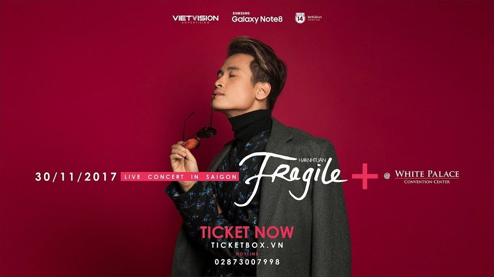
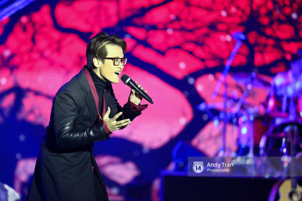

"Liên khúc tại WeChoice 2016" một lần nữa được Hà Anh Tuấn tái hiện đầy xúc cảm trên sân khấu liveshow
Trong đêm Liveshow "Fragile +", màn tái hiện liên khúc 5 hit từng "làm mưa làm gió" tại lễ trao giải WeChoice Award mùa thứ 3 của Hà Anh Tuấn khiến cả khán phòng đêm nhạc gần như bùng nổ.
- Hà Anh Tuấn mang concert "Fragile" về TP.HCM, biểu diễn lại liên khúc 5 hit từng "gây bão" ở WeChoice Awards
- Đại tiệc sắc màu cùng Hà Anh Tuấn qua MV nhạc kịch Jazz
- MC Anh Tuấn làm Giám đốc điều hành Dàn nhạc giao hưởng ở Hà Nội
Một số tin tức khác liên quan:
-------------------------------------------------------------------------------------------------------------------------------------------------------------------------
Poster liveshow "Fragile +" của ca sĩ Hà Anh Tuấn
Tối 30/11/2017, liveshow "Fragile +" của nam ca sĩ Hà Anh Tuấn đã chính thức diễn ra tại TP.HCM. Đúng như những gì khán giả mong đợi, với dấu "+" trong tên chương trình, đêm diễn ở Sài Gòn là những tiết mục hay nhất từ hai đêm "Fragile" trước đó tại Hà Nội.
Đặc biệt, kết thúc đêm nhạc, với màn tái hiện liên khúc 5 bài hát trong đêm trao giải WeChoice Awards mùa 3 là "Gửi anh xa nhớ", "Mơ", Cause I Love You", "Trái tim em cũng biết đau" và "Tháng Tư là lời nói dối của em", Hà Anh Tuấn đã khiến người nghe phải thổn thức với giọng hát vô cùng tình cảm cùng phong thái trình diễn đầy lãng tử.
Vào tối 12/1/2017, Gala WeChoice Awards 2016 tổ chức tại nhà hát Hòa Bình, Tp.HCM, một trong những điểm nhấn của chương trình chính là phần trình diễn đầy cảm xúc của nam ca sĩ Hà Anh Tuấn với loạt 5 ca khúc hit của Vpop, thuộc đề cử hạng mục "Music Video ấn tượng của năm". Video phần biểu diễn này sau khi đăng tải trên Youtube cũng nhận được lượt theo dõi khá cao, từng nằm trong top trending những clip thịnh hành nhất Việt Nam một thời gian dài.
Liên khúc WeChoice: HÀ ANH TUẤN live đẳng cấp 5 Top Hit